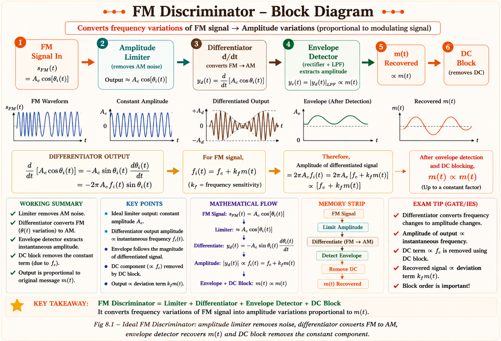
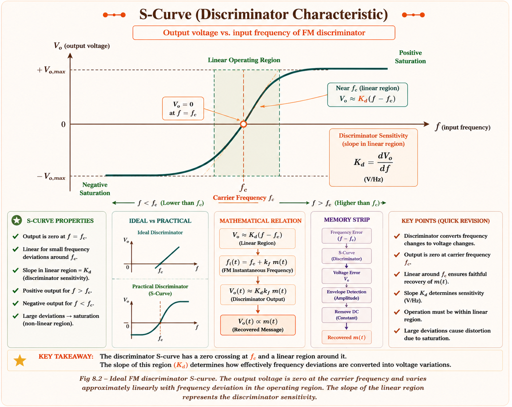
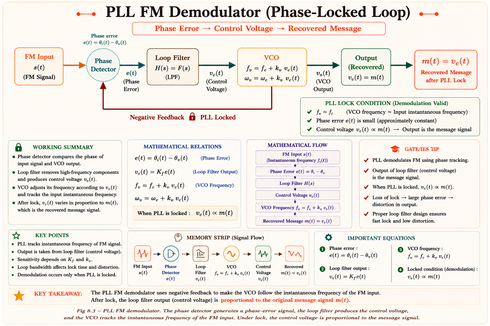
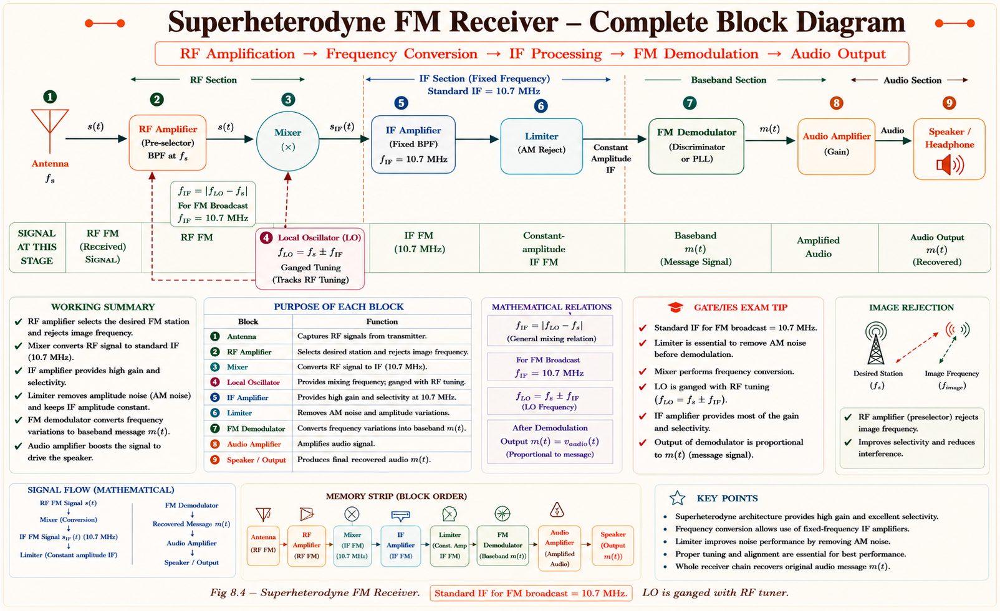
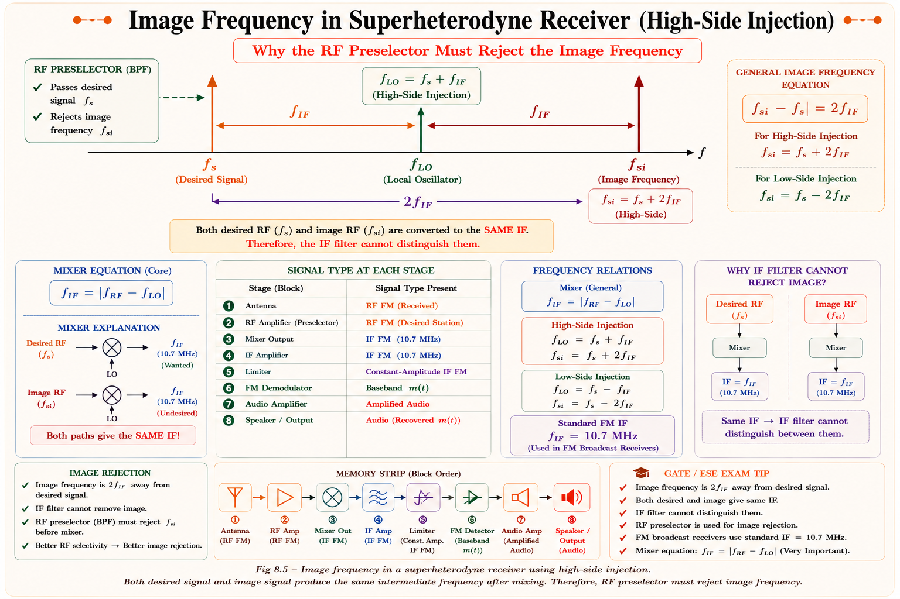
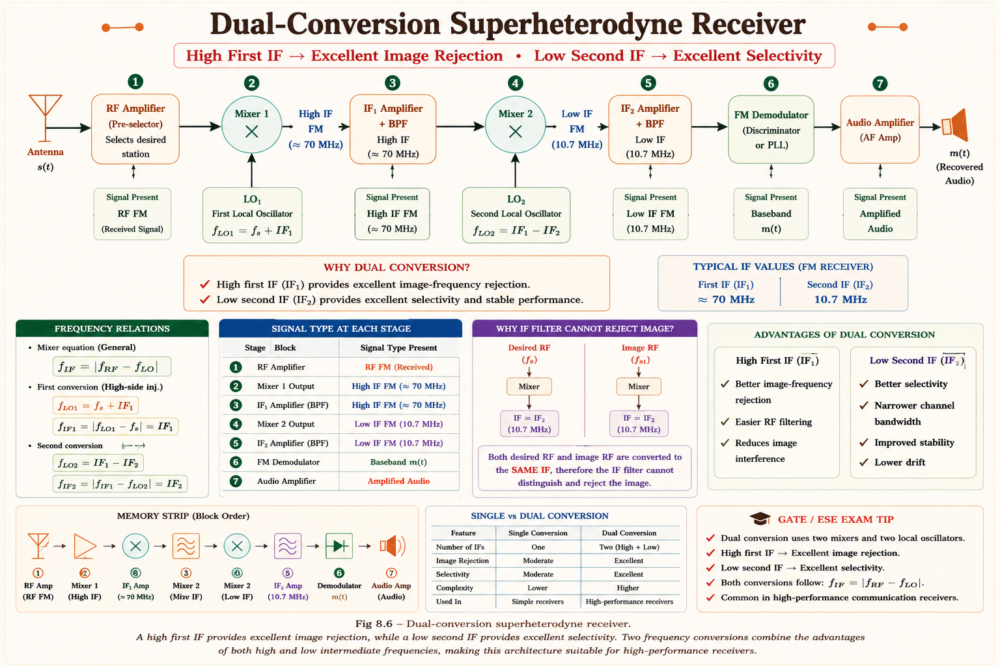
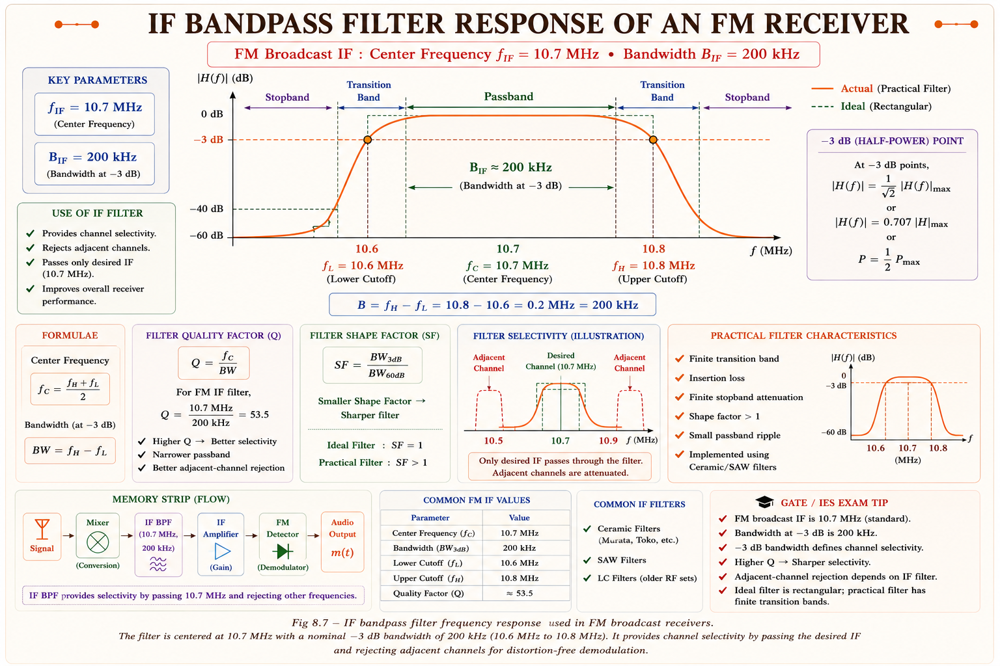

From frequency discriminators to phase-locked loops, from receiver architecture to the image frequency problem — every concept explained the way a top GATE faculty member would teach it, with diagrams, derivations, and exam insights.
Frequency Modulation (FM) is everywhere — FM radio, two-way radios, TV audio, radar altimeters, and telemetry systems all rely on FM. But generating an FM signal is only half the problem. The real challenge is recovering the original message signal at the receiver. This chapter addresses that challenge.
FM demodulation solves one fundamental engineering problem: the transmitter encoded information in frequency variations, so the receiver must convert frequency variations back into amplitude variations to recover the message. This frequency-to-amplitude conversion is the job of an FM demodulator.
Understanding FM demodulation also gives you insight into receiver design philosophy — why the superheterodyne architecture became the universal standard for virtually all radio receivers built after 1920, and why it remains dominant today despite being nearly a century old.
A frequency discriminator is the classical FM demodulator. It converts instantaneous frequency deviations into proportional output voltage changes. The name "discriminator" comes from its ability to discriminate between different frequencies.
An FM signal carries information in its instantaneous frequency \(f_i(t) = f_c + k_f m(t)\). The discriminator must produce an output voltage linearly proportional to \(f_i(t) - f_c\), i.e., proportional to \(m(t)\).
Think of a simple LC circuit tuned slightly off-resonance. At resonance, the impedance is purely resistive and maximum. As frequency moves away from resonance, the impedance changes — and so does the voltage across the circuit. This slope of the impedance-vs-frequency curve is exactly what a discriminator exploits.
A practical discriminator uses two resonant circuits tuned above and below the carrier frequency, and the difference of their outputs gives a linear characteristic — this is the balanced discriminator or the Foster-Seeley discriminator.[1]

Let the received FM signal be:[1]
After passing through the amplitude limiter (which removes amplitude fluctuations), the signal is differentiated:
This differentiated signal is an AM signal whose instantaneous amplitude is \(2\pi A_c f_i(t)\). The envelope detector recovers this amplitude:
After DC blocking (removing the \(2\pi A_c f_c\) term):
The output is linearly proportional to \(m(t)\) — perfect demodulation! The constant \(2\pi A_c k_f\) is just a gain factor and can be removed by normalisation. The differentiator does the heavy lifting by converting instantaneous frequency variation into amplitude variation.
The practical implementation most commonly used in FM receivers is the Foster-Seeley discriminator. It uses a double-tuned transformer where the primary and secondary are both tuned to the carrier frequency \(f_c\).[2]

A variant of the Foster-Seeley discriminator is the ratio detector. The key advantage: it is inherently insensitive to amplitude variations, eliminating the need for a separate limiter stage. This makes it popular in practical receivers where circuit simplicity is important.[2]
| Parameter | Foster-Seeley | Ratio Detector |
|---|---|---|
| Requires limiter? | Yes | No |
| AM rejection | Poor (needs limiter) | Good (built-in) |
| Sensitivity | Higher | Lower |
| Circuit complexity | Moderate | Moderate |
| GATE importance | 🟢 High | 🟡 Medium |
The Phase-Locked Loop (PLL) is the modern FM demodulator of choice. Unlike the discriminator, which works by frequency-to-amplitude conversion, the PLL achieves demodulation by forcing a local oscillator to track the frequency of the incoming FM signal. The control voltage needed to achieve this tracking is precisely the demodulated output.
Imagine you are walking behind a friend whose speed keeps changing. To keep pace (zero relative velocity), you must continuously adjust your walking speed. The effort you exert to adjust your speed is exactly proportional to your friend's velocity. That effort is the demodulated message. The PLL does exactly this — its VCO tracks the FM signal's instantaneous frequency, and the control voltage is m(t).

The FM input signal is \(s(t) = A_c \cos\!\left(2\pi f_c t + \phi_i(t)\right)\) where \(\phi_i(t) = 2\pi k_f \int m(\tau)\,d\tau\).
The VCO output is \(r(t) = A_v \sin\!\left(2\pi f_c t + \phi_v(t)\right)\) where \(\phi_v(t) = 2\pi k_v \int v_c(\tau)\,d\tau\).
The phase detector multiplies the two and the LPF retains only the difference term. For small phase errors (linear approximation):[1]
When the PLL is locked, the VCO frequency equals the instantaneous FM frequency. Since \(f_v = f_c + k_v v_c\), and \(f_i = f_c + k_f m(t)\), locking means \(v_c = (k_f/k_v)\,m(t)\) — perfect demodulation. The PLL acts as a feedback system, so it has superior noise performance compared to the open-loop discriminator.
The superheterodyne receiver (invented by Edwin Armstrong in 1918) is the most widely used receiver architecture in history. Almost every radio, TV tuner, radar, and wireless receiver built today uses this principle. Its genius: instead of amplifying and filtering at the received frequency (which varies as you tune), it converts all incoming signals to a single fixed intermediate frequency (IF) before amplification and filtering.
"Super" refers to supersonic (ultrasonic) intermediate frequencies used originally. "Heterodyne" means mixing two frequencies to produce sum and difference (heterodyning). The IF amplifier operates at a fixed frequency, allowing highly selective, high-gain amplification — impossible to achieve at varying RF frequencies.

Step 1 — RF Amplifier (Pre-selector): The antenna picks up signals across the entire RF spectrum. A broad bandpass filter (pre-selector) centred at the desired station frequency \(f_s\) reduces interference from other stations and the image frequency (explained in §8.5). The RF amplifier boosts the weak antenna signal.[3]
Step 2 — Mixer (Frequency Conversion): The mixer combines the RF signal at \(f_s\) with the local oscillator (LO) signal at \(f_{LO}\). The mixer is a nonlinear device that produces output components at \(f_{LO} + f_s\) and \(f_{LO} - f_s\). We retain the difference \(f_{IF} = f_{LO} - f_s\).
Step 3 — IF Amplifier: The IF amplifier operates at the fixed frequency \(f_{IF}\) (10.7 MHz for FM broadcast; 455 kHz for AM broadcast). Because the frequency is fixed, highly selective, high-Q bandpass filters and very high gain can be designed and manufactured precisely. This is the key advantage over older TRF (Tuned Radio Frequency) receivers.
Step 4 — Limiter: Removes amplitude variations (noise, fading). Essential before the discriminator.
Step 5 — FM Demodulator: Recovers \(m(t)\) using discriminator or PLL.
FM broadcast: 10.7 MHz · AM broadcast: 455 kHz · TV: 38.9 MHz (video), 32.9 MHz (sound) · GPS: 1575.42 MHz L1 (direct conversion). Knowing these values is expected in GATE and IES.
| Feature | TRF Receiver | Superheterodyne |
|---|---|---|
| Selectivity | Variable, degrades at high freq | Fixed, excellent at IF |
| Sensitivity (Gain) | Low — varies with tuning | High — fixed IF gain stages |
| Tracking problem | Multiple tuned circuits must track | Only LO tracks; IF is fixed |
| Image frequency | Not applicable | Exists (major drawback) |
| Circuit complexity | Simple | Moderate |
| Use today | Virtually obsolete | Universal |
The image frequency is the most important concept in superheterodyne receiver design from a GATE perspective. 🟢 HIGH GATE PROB
The mixer produces an IF output whenever any input signal differs from the LO by \(f_{IF}\). Since \(f_{LO} - f_s = f_{IF}\), there exists another frequency \(f_{si} = f_{LO} + f_{IF}\) which also produces an output at \(f_{IF}\). This image frequency acts as an unwanted interferer that cannot be removed by the IF filter.
With high-side injection (\(f_{LO} = f_s + f_{IF}\)), any signal at:[3]
The image frequency is always separated from the desired signal by \(2f_{IF}\). The pre-selector (RF BPF) must reject this frequency.

The Image Rejection Ratio measures how well the receiver suppresses the image frequency signal relative to the desired signal. It is defined as:[3]
where \(\rho = \frac{f_{si}}{f_s} - \frac{f_s}{f_{si}}\) and \(Q\) is the quality factor of the pre-selector filter.
If \(f_{IF}\) is large, the image frequency \(f_{si} = f_s + 2f_{IF}\) is far from \(f_s\), making it easier for the pre-selector to reject it. But high IF makes the IF filter design harder (lower Q at higher frequency). This is the fundamental selectivity–image rejection tradeoff in superheterodyne design.
To resolve this tradeoff, many receivers use dual conversion: two IF stages. The first IF is high (good image rejection), and the second IF is low (good selectivity and gain). This architecture is used in high-performance communications receivers and spectrum analysers.[4]

The Intermediate Frequency (IF) amplifier is the heart of the superheterodyne receiver. It provides the bulk of the receiver's gain and selectivity at a fixed intermediate frequency. Because the frequency does not change as you tune the receiver, the IF amplifier can be optimised once and performs consistently across the entire tuning range.
The IF amplifier uses a bandpass filter centred at \(f_{IF}\). The bandwidth must be wide enough to pass all sidebands of the FM signal but narrow enough to reject adjacent channels. For FM broadcast:
where \(\Delta f\) is the maximum frequency deviation, \(f_m\) is the highest message frequency, and \(\beta = \Delta f / f_m\) is the modulation index. For commercial FM: \(\Delta f = 75\text{ kHz}\), \(f_m = 15\text{ kHz}\), giving \(B_T = 180\text{ kHz} \approx 200\text{ kHz}\).[1]
In a cascaded receiver system (RF amp → Mixer → IF amp), the overall noise figure is dominated by the first stage. The Friis formula gives:[1]
where \(F_n\) is the noise factor and \(G_n\) is the gain of each stage. This shows why the RF amplifier (stage 1) must have low noise figure and adequate gain — it sets the noise floor for the entire receiver.
The IF amplifier operates at a single fixed frequency — this allows the use of ceramic IF filters (piezoelectric resonators) that provide very high Q (300–1000) at low cost and small size. Crystal filters provide even higher Q. These cannot be made at variable RF frequencies, which is why the superheterodyne architecture was such a breakthrough.

The IF amplifier includes an Automatic Gain Control (AGC) circuit that adjusts the gain based on signal strength. Strong stations get less gain; weak stations get more. This keeps the demodulator output at a constant level regardless of received signal strength, preventing overload from nearby transmitters and audible fading for distant ones.[2]
A: The FM signal has a constant amplitude \(A_c\) and information in its instantaneous frequency. When differentiated, the chain rule brings out the instantaneous angular frequency \(\omega_i(t) = 2\pi f_i(t)\) as a multiplier of the amplitude. So the output has amplitude \(A_c \cdot 2\pi f_i(t)\) — which now varies in time just like an AM signal. The key: differentiation converts frequency modulation in the argument to amplitude modulation in the envelope.
A: If the input FM signal's frequency deviates beyond the hold-in range of the PLL, the loop loses lock. The VCO can no longer track the input, and the output \(v_c(t)\) becomes noisy and meaningless. The PLL must then go through the acquisition process to re-lock — which takes time and results in signal dropout. This is the PLL's Achilles' heel in mobile and fading environments.
A: Because by the time the signal reaches the IF filter, the image has already been converted to the same IF frequency as the desired signal. The mixer maps both \(f_s\) and \(f_{si} = f_s + 2f_{IF}\) to the same \(f_{IF}\). After mixing, they are indistinguishable to any filter. The image must be suppressed before mixing — that's the job of the pre-selector RF filter.
A: Increasing \(f_{IF}\) increases \(2f_{IF}\) — the separation between desired and image frequency. This makes image rejection easier (better IRR) because the pre-selector can more easily attenuate the image. However, a higher IF makes it harder to build a narrow, high-Q IF filter, reducing selectivity (ability to reject adjacent channels). This is the fundamental tradeoff that led to the invention of dual-conversion receivers.
A: FM signals carry information only in frequency — not in amplitude. However, the channel introduces amplitude variations (noise, multipath). The discriminator (differentiator + envelope detector) would interpret these amplitude variations as frequency changes, corrupting the output. The limiter clips the signal to constant amplitude, removing all amplitude noise before the discriminator sees it. This is why FM is inherently more noise-immune than AM — the limiter stage removes noise for free.
Solution: For high-side injection, \(f_{LO} = f_s + f_{IF} = 800 + 450 = 1250\) kHz. Image frequency: \(f_{si} = f_{LO} + f_{IF} = 1250 + 450 = \mathbf{1700}\) kHz, or equivalently \(f_{si} = f_s + 2f_{IF} = 800 + 900 = 1700\) kHz.
Solution: The discriminator converts \(f_i(t) - f_c = k_f m(t)\) to a proportional voltage. The output is \(v_o = A \cdot k_f \cdot m(t)\), which is proportional to the instantaneous frequency deviation — equivalently, to \(m(t)\) itself.
Solution: The ratio detector inherently rejects amplitude variations due to the large capacitor in its circuit that holds the total diode voltage constant. This removes the need for a separate limiter, simplifying the receiver design. The Foster-Seeley is sensitive to amplitude variations and must be preceded by a limiter.
Solution: When the PLL is locked, \(f_{VCO} = f_i(t) = f_c + k_f m(t)\). Since \(f_{VCO} = f_c + k_v v_c(t)\), we get \(v_c(t) = (k_f/k_v) m(t)\). The control voltage is directly proportional to the message signal \(m(t)\).
Solution:
Given: \(f_s = 98\) MHz, \(f_{IF} = 10.7\) MHz, high-side injection.
Local oscillator: \(f_{LO} = f_s + f_{IF} = 98 + 10.7 = \mathbf{108.7}\) MHz
Image frequency: \(f_{si} = f_s + 2f_{IF} = 98 + 21.4 = \mathbf{119.4}\) MHz
Note: 119.4 MHz is outside the FM broadcast band (88–108 MHz), which is why the standard 10.7 MHz IF was chosen — the image frequency falls outside the band for most tuned stations, naturally aiding image rejection.
Image rejection is the suppression of the frequency \(f_s + 2f_{IF}\) (or \(f_s - 2f_{IF}\)) — done by the pre-selector RF filter before mixing. Selectivity is the rejection of adjacent channels — done by the IF filter after mixing. These are two different problems, solved by two different filters.
The image frequency is NOT \(f_{LO}\). It is \(f_{si} = f_s + 2f_{IF}\) (high-side injection) or \(f_{si} = f_s - 2f_{IF}\) (low-side injection). Memorise: image = desired ± 2·IF. Many students write \(f_{si} = f_{LO} + f_{IF}\) — while this gives the same result, it is confusing. The formula \(f_{si} = f_s + 2f_{IF}\) is the clearest.
Students often confuse the PLL phase detector output (which measures phase error) with the final demodulator output (which is proportional to frequency deviation = message). The loop filter integrates the phase error to drive the VCO; the VCO control voltage at steady state is proportional to frequency deviation, which equals \(m(t)\). Do not confuse phase with frequency.
The Foster-Seeley discriminator is sensitive to amplitude variations. Without a limiter, AM noise appears in the demodulated output. The ratio detector avoids this, but the Foster-Seeley (which is GATE-frequent) requires a limiter. Always include the limiter when drawing the discriminator-based demodulator.
Higher IF improves image rejection BUT reduces selectivity (because filter Q must be higher at higher frequency for the same bandwidth). It also increases spurious responses. There is always a tradeoff — dual conversion solves this by using two IFs: one high (for image rejection) and one low (for selectivity).
"A Man In London Does Aeroplane Maintenance"
Antenna → Mixer → IF Amp →
Limiter → Demodulator → Audio Amp →
Message out
(Insert RF Amp between Antenna and Mixer if needed.)
"Image is two IF's away from desired"
\(f_{image} = f_{desired} + 2 \times f_{IF}\) (high side) or \(f_{desired} - 2 \times f_{IF}\)
(low side).
Think: IF is the "gap" — image sits two gaps away. Draw the number line: desired — gap — LO
— gap — image.
"FM → 10.7 · AM → 455 · TV → 38.9"
FM broadcast: 10.7 MHz (remember: "ten point seven")
AM broadcast: 455 kHz (remember: "four fifty five")
TV (video): 38.9 MHz (remember: "thirty-eight nine")
These are required for direct GATE numericals.
"Foster Needs Limits, Ratio Rejects Ratio"
Foster-Seeley = needs Full limiter
Ratio detector = inherently Rejects amplitude (has built-in AM
rejection)
Ratio detector sacrifices sensitivity for AM immunity.
Imagine a dog (VCO) on a leash (loop filter). The owner (FM signal) walks at varying speed. The dog must match the owner's speed exactly (phase lock). The tension in the leash — the effort to stay locked — is exactly proportional to the owner's speed change. That leash tension = \(v_c(t)\) = demodulated \(m(t)\).
(a) Local Oscillator Frequency:
(b) Image Frequency:
(c) Comment: 1910 kHz is outside the AM broadcast band (535–1605 kHz), so no legitimate broadcast station can act as image. However, a shortwave station or other service at 1910 kHz could cause image interference if the pre-selector is too wide.
Step 1: Find image frequency:
Step 2: Compute \(\rho\):
Step 3: Compute IRR:
A higher Q or higher IF would further improve image rejection. If Q were doubled to 200, IRR would increase by ~6 dB.
When the PLL is locked, the VCO frequency equals the instantaneous FM frequency:
At lock: \(f_{VCO} = f_i(t)\), so:
Physical meaning: The VCO output perfectly tracks the FM signal. The control voltage is a 1V amplitude, 1 kHz cosine — the demodulated message signal, with a scaling factor of \(k_f/k_v = 0.5\).
Limiter → Differentiator → Envelope Detector. Output \( \propto k_f \cdot m(t) \). Foster-Seeley needs limiter; Ratio detector does not. S-curve = linear characteristic. Sensitivity in V/Hz.
VCO tracks FM frequency. Control voltage \( v_c = \frac{k_f}{k_v} \cdot m(t) \) when locked. Better SNR than discriminator. Subject to acquisition failure. Holds-in range = lock range.
RF Amp → Mixer → IF Amp → Limiter → Demod → Audio. \( f_{\text{IF}} = 10.7 \text{ MHz} \) (FM), \( 455 \text{ kHz} \) (AM). LO ganged with RF. High gain and selectivity at fixed IF. AGC controls level.
\( f_{si} = f_s + 2f_{\text{IF}} \) (high-side). Image maps to same IF as desired. Must be rejected by pre-selector RF BPF. IF filter cannot help. \( \text{IRR} = \sqrt{1 + Q^2\rho^2} \). Higher IF → better IRR.
Fixed frequency → high Q, high gain. \( B_{\text{IF}} \approx 200 \text{ kHz} \) for FM. Ceramic/crystal filters. AGC built-in. Noise figure: Friis formula — first stage dominates. Typically 60–80 dB gain.
\( f_{si} = f_s \pm 2f_{\text{IF}} \) · \( \text{IRR} = \sqrt{1 + Q^2\rho^2} \) · \( \rho = \frac{f_{si}}{f_s} - \frac{f_s}{f_{si}} \) · \( B_T = 2(\Delta f + f_m) \) · \( v_c = \frac{k_f}{k_v} m(t) \)
Ask any question about FM demodulation, superheterodyne receivers, image frequency, or PLL. Get step-by-step GATE-focused answers.
All technical content is derived from the following standard textbooks and examination resources. All explanations, derivations, diagrams, and examples are original to Aarova AI.